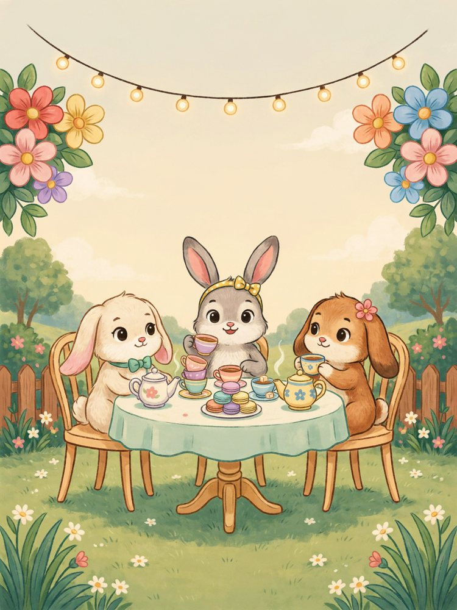
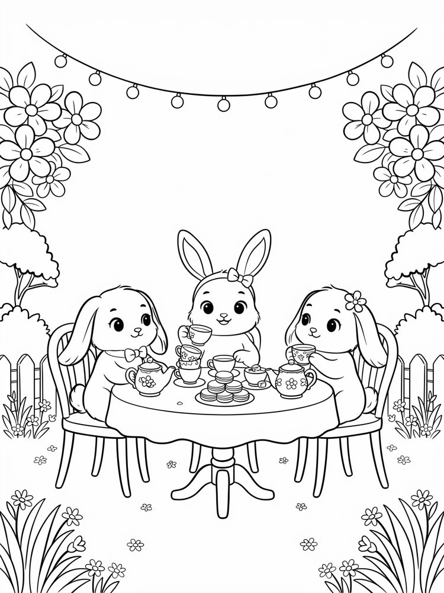
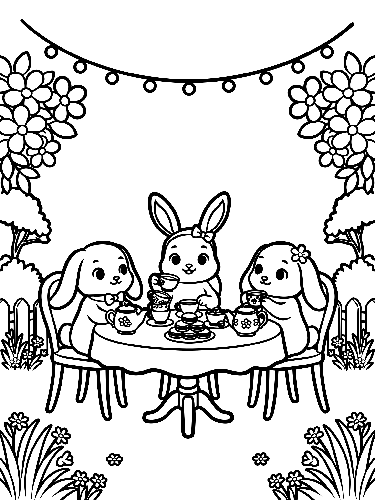
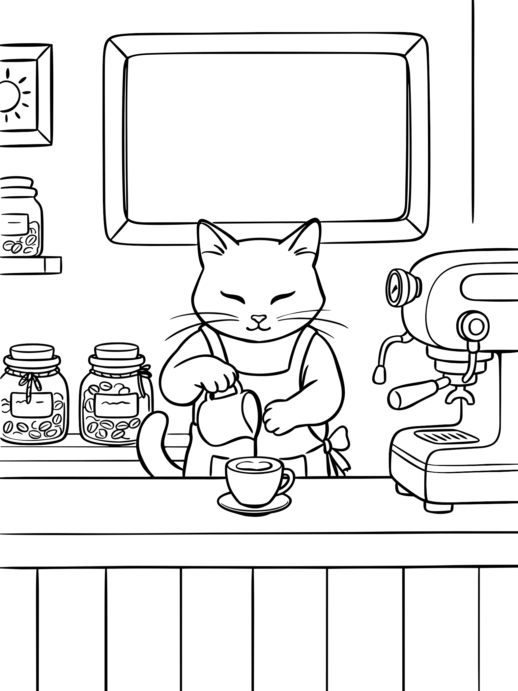
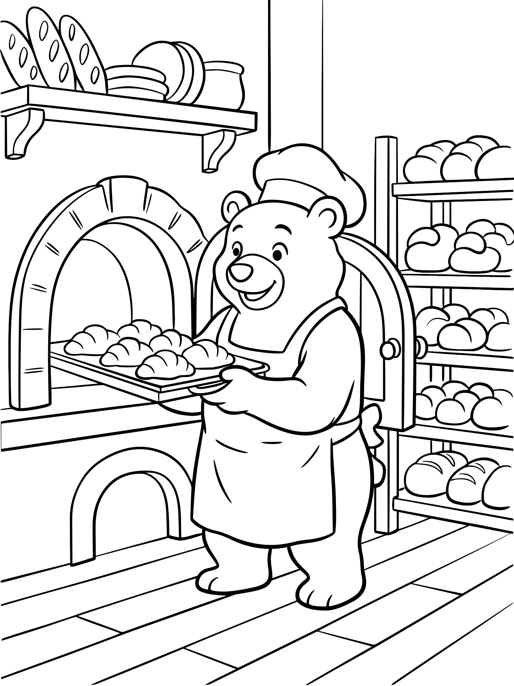
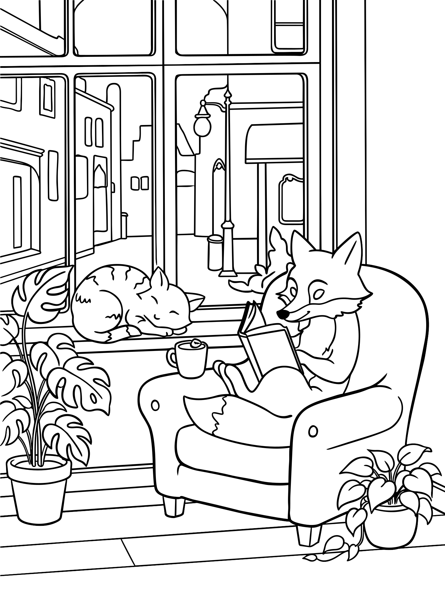
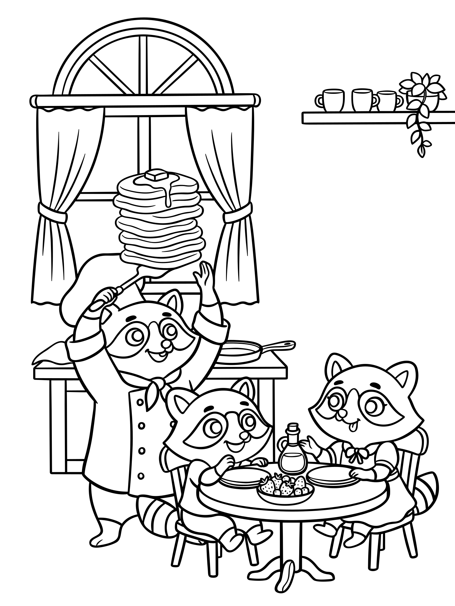
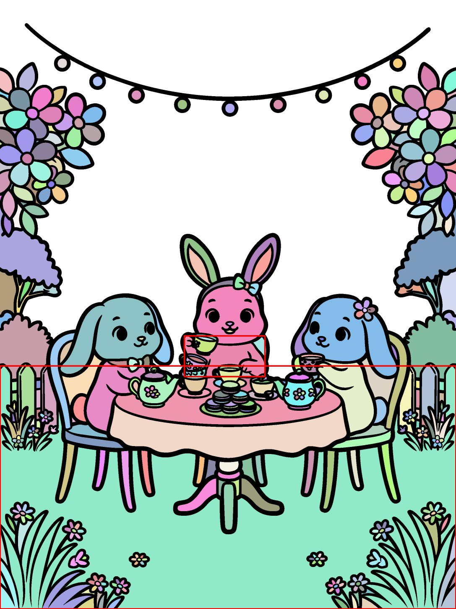
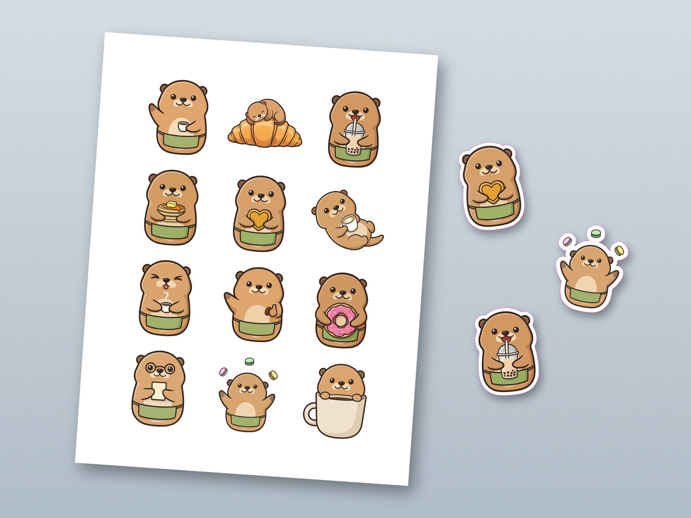

Зачем это
Книги-раскраски и стикерпаки — одна из самых массовых ниш на Amazon KDP и Etsy. Обычно на одну книгу уходят дни работы иллюстратора, а здесь вся книга собирается за вечер и сразу уходит в печать. Это кейс «запусти свой принт-бизнес» для авторов, продавцов и принт-шопов.
Честно: раскраски с ИИ делают давно, и KDP ими уже завален. Новое здесь в связке: один стиль и одни персонажи на всех страницах плюс чистый вектор через один API, без ручной трассировки. С другими моделями на этой задаче мы не сравнивали.
Как это работает



Страницы книги




Это векторные файлы, их можно увеличить в браузере до любого размера. Для печати: 8.5×11 дюймов с вылетами, поля по требованиям KDP, картинки на правых страницах, на обороте лист для пробы цветов.
Проверка заливки
Главный риск раскраски — краска «протекает» через разрыв в линии в соседнюю фигуру. Каждую страницу проверяли заливкой рендера в 300 dpi. В первом проходе на 5 из 12 страниц персонаж сливался с фоном. После второго прохода и отбора видимых протечек нет, 41 перемычка закрыла мелкие разрывы.


Стикерпак
Один мастер-стикер и 11 правок «тот же персонаж» в Ideogram 4.5. Каждый стикер векторизован, у него своя белая обводка и отдельная замкнутая линия реза.
Лист формата Letter, 3×4 стикера в зоне Cricut Print Then Cut. Отдельно лежат файлы только для печати, только для реза и PNG 300 dpi.
Скачать
Блок книги, PDFОбложка, PDFЛист стикеров с линией реза, SVG

Что не проверено
- Реальная печать на KDP: их превью-проверка и плотность линий на бумаге.
- Реальная резка на Cricut и Silhouette. Поля под метки регистрации оставлены, но не проверены.
- Мокапы нарисованы в коде, это не фото.